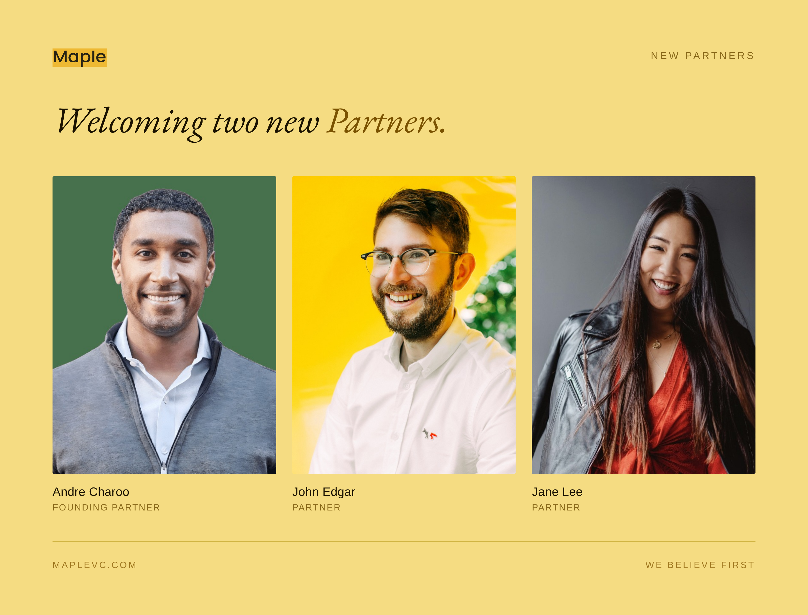

Venture capital was built on a beautiful idea: that the people with the clearest view of the future should have capital to match their conviction.
Somewhere along the way, the industry confused proximity to capital with proximity to truth.
The firms that will matter in the next era will be the ones that never made that mistake. The ones where every person around the table has lived something real, built something from nothing, and felt the specific weight of decisions that could not be undone.
You cannot learn that from a case study. You cannot fake the scar tissue.
Before Maple, I left a comfortable path in investment banking to move to Silicon Valley and start a company of my own. We raised capital, built a team, shipped a product, signed customers, and then watched the world change overnight during the financial crisis. The term sheet we thought would save the company disappeared the same week Lehman Brothers collapsed. Eventually, we shut it down.
That experience stayed with me. Not because of the failure itself, but because of what came after it. Conviction is easy when things are working. The harder test is continuing after doubt, after setbacks, after seasons where the evidence disappears.
Years later, when my wife's career brought us to Korea in the middle of fundraising for Maple III, many people thought it would be impossible to build a Silicon Valley venture firm from the other side of the world. We stayed anyway because family matters. I adjusted my life around the mission, waking up at 2am to operate in Pacific time while helping care for my mother-in-law through cancer treatment.
Maple III ultimately became a $33 million fund and today sits at more than 2x. But the more important lesson for me was that the most meaningful decisions in life and business rarely look rational in the moment. Faith, at least for me, has meant continuing anyway.
The founders who will define the next decade are not waiting for permission. They are people who cannot stop. Those founders do not need partners who optimize for pattern recognition. They need partners who understand that before every great outcome comes a period where all you really have is conviction and the courage to act on it.
That is the firm we are building at Maple.

Today I am proud to welcome John Edgar and Jane Lee as Partners at Maple VC.
This is not a hiring announcement. It is a statement about what we are building and who we are building it with. Both of them have been inside this work for years. Both of them already have skin in the game. What changes today is the title. What does not change is anything that actually matters.
John Edgar
There is a particular kind of person who shows up before it counts. Before the round is announced. Before the deck is finished. Before anyone else has decided it is worth their time.
John Edgar is that person.
He spent months advising Mai Trinh before she raised a dollar. He helped us win the opportunity to back Internet Backyard, where the round was ultimately restructured to include Maple. That relationship led to RentAHuman, a company that gained significant traction and chose to partner with Maple before joining YC's current batch.
None of that was in his job description because he did not have one yet. He just showed up.
That instinct comes from somewhere real.
John was born in Canada, raised in Scotland, and moved to New York to build. As a founding team member at DigitalOcean, Chief Technology Evangelist and later SVP of Strategy, he spent 7 years helping scale the company from its earliest days into infrastructure millions of developers rely on today. John was there when it was still a question nobody could answer.
After DigitalOcean, founders started calling. Not because of a fund name. Because they trusted his judgment. Teams at Netlify, Anthropic, and SF Compute sought him out before the outcomes were obvious to anyone. John has a nose for talent before the market knows it exists. He met HashiCorp at two people. Datadog too. His judgment is intuitive, taste-based, hard to articulate — think Rick Rubin in a studio. He can't always explain why something is great. He just knows.
That is the kind of reputation you cannot manufacture. You earn it by being right before consensus forms.
At Maple, John will help lead our seed-stage investing efforts, including launching a new residency and foundry initiative in Fund IV designed to find exceptional founders before they even have a deck.
He is also our first full-time presence in Canada, where we believe the next great generation of founders is already forming.
Founders John brought into the Maple family before he was ever officially a partner.
Jane Lee
Jane has spent her career making other people look brilliant. That is not a criticism. It is the highest form of the craft.
She was born and raised in Canada, moved to LA a decade ago, and is now based in SF. She joined Shopify early, spending three years as Entrepreneur in Residence before most people understood what the company would become.
She has always had a gift for being in the right room before the rest of the world realizes it is the right room.
She later founded LaunchPop, a venture studio where she helped incubate and scale some of the most recognizable consumer brands of the last decade. She helped build Topicals from zero into one of the defining brands in beauty. She helped scale Liquid IV through its path to a billion-dollar exit.
For years, she was the person behind brands people loved without knowing her name.
WTHN. Formula Fig. Myo — Brands that do not just acquire customers, but build communities.
What makes Jane special is that she never stopped at marketing. She is also a founder and investor with a rare instinct for founders before the market catches on. She personally backed Aero and Myo early and watched them grow 5x in value.
Jane has already had a significant impact at Maple. She sourced Blacklake, a defense intelligence company we led at seed in 2022 that has since grown 17x into one of the standout companies in our portfolio.
She has been part of Maple since 2019. She has had skin in this game longer than many people who already carry the partner title elsewhere.
At Maple, Jane will lead marketing and help scale our founder community as we expand the networks we source from in Fund IV, while also supporting growth across the portfolio.
She is based in SF alongside me (I moved back last week), which means we will finally be able to do together what we have largely done at a distance until now. She is also, finally, getting the title that reflects what she has already been here.
I will close with this.
People often ask me how I make decisions at the earliest stage, before the data, before the track record, before any of the signals traditional investing relies on.
The honest answer is that over time I developed two frameworks — one for evaluating founders and one for evaluating investments — and I will share both in more detail someday.
But underneath the frameworks, underneath all of it, there has always been something deeper.
I am a person of faith.
There is a verse I keep coming back to: Hebrews 11:1 — "the assurance of things hoped for, the conviction of things not seen."
I have heard many definitions of early-stage investing over the years. None have ever come closer than that.
Not certainty. Conviction.
Not proximity to status. Proximity to truth.
Not people waiting for permission, but people willing to move before the world catches up.
That is the table John and Jane are joining today.
And in the deepest sense of the word, it is the table this firm exists to build.
Leave a comment
Thanks for your comment — we'll review it shortly.